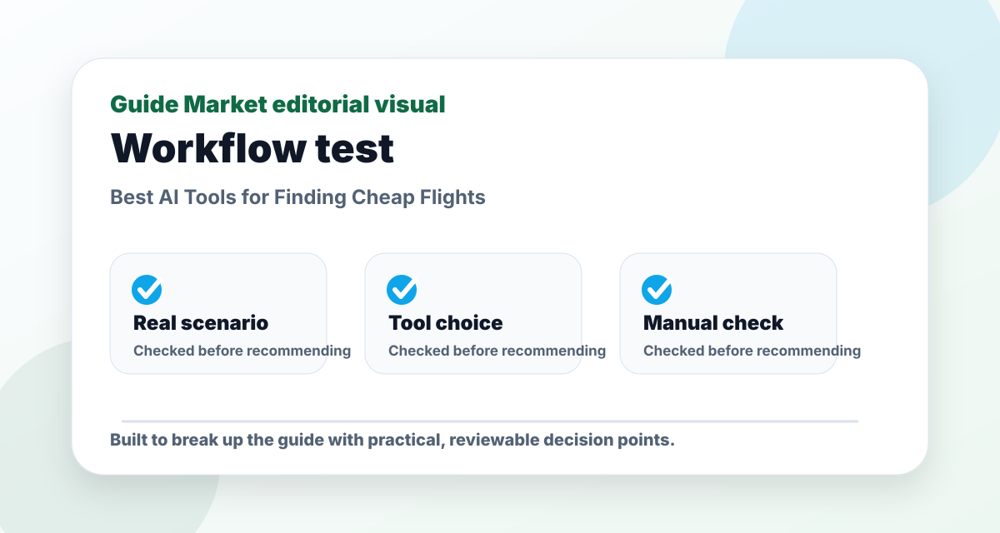
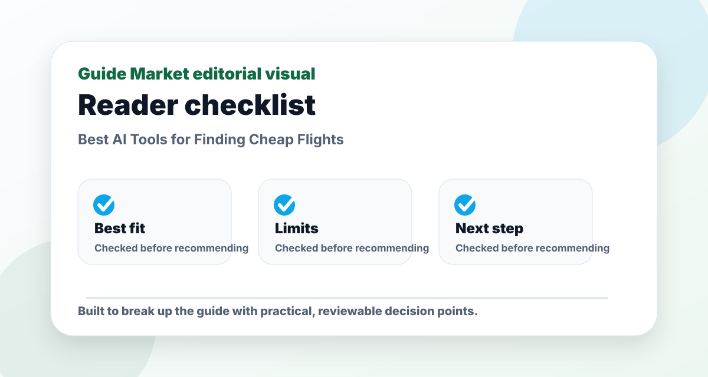
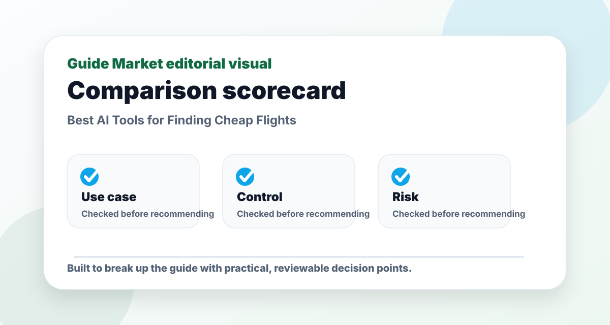

Best AI Tools for Finding Cheap Flights
Published May 12, 2026. Last updated May 24, 2026. Estimated reading time: 10 minutes.
Cheap flight tools are not magic. They help you see date flexibility, nearby airports, fare trends, and route combinations faster. The real advantage comes from using alerts early and being flexible before prices move.




The real problem this guide solves
This guide is not meant to be a quick list of names. The real problem is choosing finding cheap flights tools that solve a real task instead of adding another unused subscription. That requires context: what the reader is trying to do, what can go wrong, and which option is useful after the first impressive demo.
I evaluate Google Flights, Skyscanner, Hopper, Kayak through a practical lens: how easy they are to start, how much control they give you, what must be verified manually, and whether they still make sense after the novelty fades. A recommendation only matters if it survives a realistic task.
Practical comparison criteria
| Criterion | What it reveals | How to test it |
|---|---|---|
| Use-case fit | Whether the option solves the actual job, not a generic version of it. | Test it with this scenario: a reader using finding cheap flights tools on one realistic project and comparing the output side by side. |
| Control | Whether you can edit, verify, export, or adapt the result. | Try to change the output without starting from zero. |
| Reliability | Whether the recommendation remains useful when facts, prices, or constraints change. | Check the official source and compare with at least one alternative. |
| Long-term value | Whether the workflow will be used repeatedly. | Ask if it saves time next week, not only today. |
Pros and cons
Pros
- Gives a clearer starting point for a messy decision.
- Helps compare options using the same real-world scenario.
- Creates a repeatable workflow instead of a one-off answer.
Cons
- Still requires manual verification and judgment.
- Free plans or public information may be limited or outdated.
- Choosing too many options can create more work, not less.
Editorial verdict
My pick: Google Flights for most searches, Skyscanner for broad exploration, Hopper if you like prediction-style guidance, and Kayak as a second opinion. Never trust one price source without checking the airline directly before booking.
Quick picks
- Best free starting point: Google Flights
- Best broad exploration: Skyscanner
- Best prediction-style app: Hopper
- Best comparison backup: Kayak
Price and feature snapshot
| Tool | Price snapshot | Pros | Cons |
|---|---|---|---|
| Google Flights Official site | Free search tool | Fast date grid, tracking, filters, airline links | Does not sell every fare itself |
| Skyscanner Official site | Free comparison tool | Everywhere search and flexible destination discovery | Final booking may happen through partners |
| Hopper Official site | Free app with paid/fintech-style travel products depending on booking | Price prediction and mobile-first alerts | Extra products can complicate checkout |
| Kayak Official site | Free comparison tool | Filters, alerts, broad travel comparison | Can show partner booking options you must review carefully |
My cheap-flight routine
I start with Google Flights using flexible dates, then check Skyscanner for alternate airports and destinations. If the route is expensive, I set alerts instead of refreshing manually. Before booking, I compare the airline website because baggage rules and customer support can matter more than saving a few dollars.
What counts as a real deal
A cheap fare is not always a good fare. Look at luggage, arrival airport, overnight layovers, refund rules, seat selection, and whether a self-transfer is involved. AI can summarize options, but only the booking page shows the final conditions.
Editorial recommendation
Google Flights is the cleanest default. Skyscanner is better for open-ended trips. Hopper is useful if you like prediction signals, but I would not buy extras without reading the terms carefully.
Best use cases
- Flexible weekend trip
- One-way multi-city backpacking route
- Family trip with baggage included
- Long-haul flight where layovers matter
FAQs
What is the best option for beginners?
The best beginner option is usually the one that solves one clear task with the least setup. Start with a free or simple workflow before paying.
Are paid plans worth it?
Only when the paid feature removes a real limit such as exports, collaboration, higher usage, integrations, or better control.
Can these tools replace human review?
No. They can speed up drafting and comparison, but important facts, public content, schoolwork, business decisions, and financial details still need review.
How do I avoid generic results?
Use a specific brief with goal, audience, constraints, examples, and the format you want. Then ask the tool to revise against clear criteria.
Hands-on testing notes
For this topic, I would not judge Google Flights, Skyscanner, Hopper, Kayak from the homepage alone. Marketing pages are designed to make everything look easy. A fair test uses one task, one deadline, and one output format. In practice, that means giving every tool the same brief and judging the amount of useful work left after the first result.
In testing, I care less about the longest feature list and more about whether the workflow stays editable after the first draft. If setup takes longer than the task itself, the tool is probably wrong for a beginner. If the output is polished but hard to edit, it may create hidden friction. If the tool saves time but weakens quality, it is not a real productivity gain.
I would also test what happens when the first answer is not good enough. Can the tool revise? Can it explain why it made a choice? Can you export the result? Can you collaborate with someone else? These practical details matter more than a dramatic demo.
How to combine the tools
A strong workflow usually has three parts: one tool for creation, one for review, and one for organization. For example, use the fastest option to generate a draft, a more careful option to critique it, and your normal workspace to save the final version. This keeps AI useful without letting it take over the whole process.
For Best AI Tools for Finding Cheap Flights, my default stack is one primary tool for the core task, one secondary tool for review, and a simple checklist for verification. Start small, test the result, then add complexity only when the simple workflow hits a real limit.
Common mistakes
- Using a vague prompt and blaming the tool for a vague result.
- Subscribing before testing the free workflow on a real task.
- Ignoring privacy or uploading information that should stay private.
- Keeping a tool because it feels impressive, even when it does not improve the final result.
- Skipping manual review when facts, claims, or public-facing content matter.
Final recommendation
My practical recommendation is to choose the simplest tool that solves the main problem, then build a repeatable checklist around it. The reader should finish with a usable process, not just a list of apps. If the tool makes the task easier to start, easier to finish, and easier to review, it has earned its place.
My cheap-flight testing routine
To test flight tools properly, I would not search one route on one date and call it finished. I would search three date ranges, two nearby airports, and at least one alternative destination. Cheap flights often appear when the traveler is flexible, so a good tool should make flexibility easy to compare.
For example, if you want to fly from Madrid to Tokyo, also check Osaka, Seoul, and flexible arrival dates. Sometimes the cheapest route is not the obvious route. Google Flights is excellent for broad calendar scanning, Skyscanner is useful for destination flexibility, Hopper is helpful for price-watch behavior, and Kayak can be useful for alerts and filters.
The important thing is to compare total trip cost, not just the flight price. A cheaper flight with a long overnight layover, expensive baggage, inconvenient airport transfer, or risky connection may not be cheaper in real life. The best AI-assisted flight workflow should help you see tradeoffs clearly, not only chase the lowest number.
What I would verify before booking
Before booking, I would verify baggage rules, change fees, airport transfer costs, layover length, visa or transit requirements, and whether the ticket is booked directly with the airline or through a third party. Many bad flight decisions happen after finding a good-looking fare and skipping the details.
I would also check the same itinerary on the airline website. Sometimes third-party listings show prices that change at checkout. Sometimes airline-direct booking gives better support if something goes wrong. A flight tool is excellent for discovery, but the final booking decision deserves a slower review.
Editorial bottom line
The point of this guide is not to collect more tools. It is to leave with a decision that can be tested in real life. Before choosing, run one small project, compare the result with your current workflow, and ask whether the tool improved quality, saved time, or reduced confusion. If it did none of those things, it is not the right recommendation yet.
I would also keep a short note after testing: what worked, what failed, what needed manual checking, and whether I would use it again next week. That small habit turns a casual recommendation into a practical decision. It also protects you from keeping software only because it looked impressive during the first session.
Reader checkpoint
Before you leave the article, choose one action you can take today: test the main recommendation, compare it with one alternative, or write down why you are not ready to decide yet. A useful guide should create a next step, not just more open tabs.